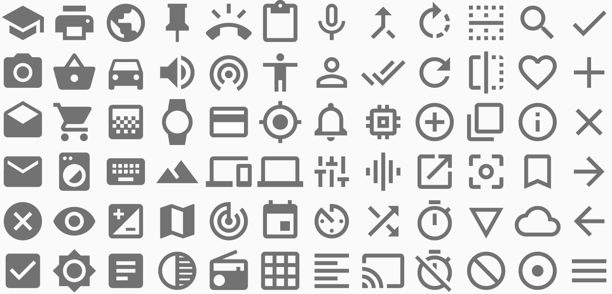

References / Illustration / 249
Material Design system icons
Google’s set of simple 24 dp interface glyphs, drawn on one grid with the same stroke, corners, and flat gray fill.
- Source
- Google, Material Design 1 guidelines: Icons
- Creator
- Made
- 2014 (repository google/material-design-icons created 8 October 2014)
- Style
- Material Design (agent-proposed, not yet reviewed by a person)
- Moods
- Systematic, neutral, clear
- Evidence
- Opened the system icon overview style-icons-system-intro.png (1520 × 730) from the Material Design 1 icons page on 28 September 2026. Checked the repository date and license through the GitHub API for google/material-design-icons.
- Reviewed
- Rights
- Open license, stored. License: Apache-2.0. Rights policy
Context
The Material Design 1 icons page separates product icons (see Material product icons) from system icons, which are simple glyphs for actions and objects. It shows the system icons on a keyline grid. Icons.
Google publishes the icons in the repository google/material-design-icons under the Apache License 2.0. The GitHub API gives the creation date as 8 October 2014. GitHub.
Observed
- Seventy-two icons in six rows, all in one mid-gray (about #757575) on a near-white ground.
- Strokes have one weight throughout. Ends are cut square, and corners of outlined shapes are slightly rounded.
- Glyphs mix solid shapes (camera, envelope, bookmark) with outlines (heart, cloud, circle with plus). None has a gradient, a highlight, or a shadow.
Why it belongs
The icons carry the flat half of the style. Depth in Material belongs to surfaces, not to glyphs, so an icon stays flat even when it sits on a raised button.
Borrow
Draw interface icons on a 24 px grid with one stroke weight and square ends, and color them with the secondary text color (black at 54 %) instead of pure black.
Measured
Machine-extracted by tools/image-traits.py on . Full measurement.
- Mean chroma
- 0
- Palette
- #fafafa 70%
- #727272 16%
- #c0c0c0 3%
- #848484 3%
- #ececec 2%
- #989898 2%
- #e0e0e0 2%
- #acacac 1%

